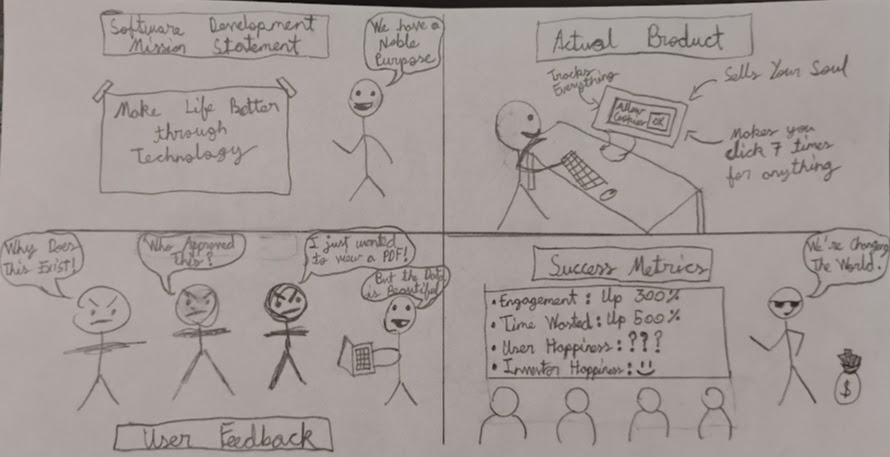
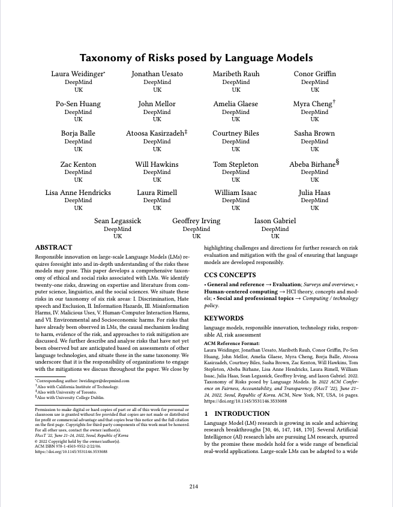
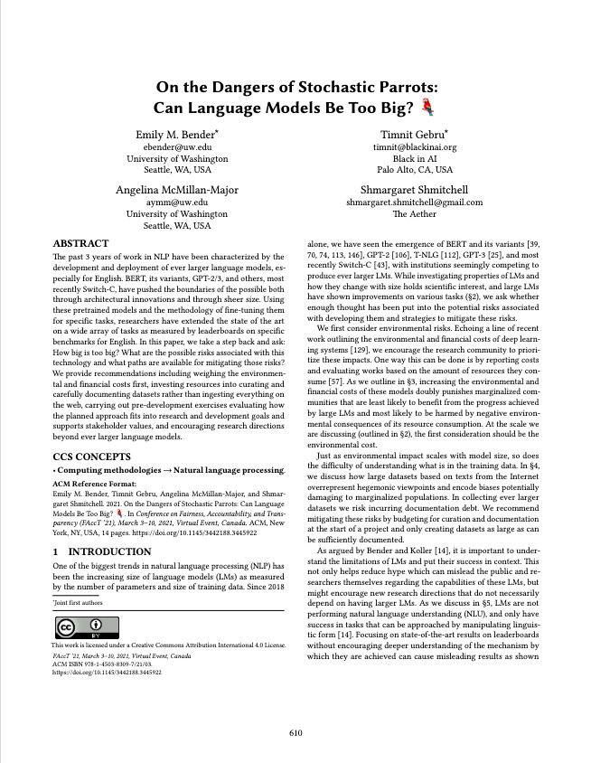
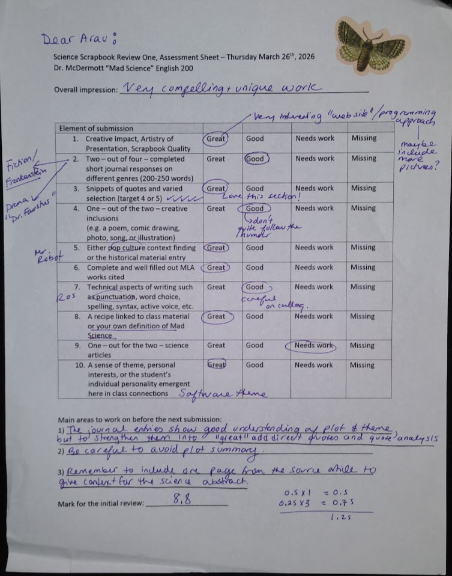

> INITIALIZING MAD_SCIENCE.LOG .............. [OK]
> LOADING SCRAPBOOK KERNEL ................. [OK]
> MOUNTING JOURNAL ENTRIES ................ [OK]
> CHECKING FOR MONSTERS ................... [WARNING: FOUND]
> READY.
MAD
SCIENCE
SCIENCE
MY SCIENCE SCRAPBOOK — WINTER 2026
| STUDENT | Arav Sahni |
| STUDENT NO. | 2468547 |
| COURSE | ENG 603-200-AB |
| INSTRUCTOR | Dr. Jennifer McDermott |
| THEME | Software as Mad Science |
01010101010101010101010101010101
10101010101010101010101010101010
00110011001100110011001100110011
11100011100011100011100011100011
01101001011011100111010001100101
01101100011011000110100101100111
01100101011011100110001101100101
01000110011100100110000101101110
01101011011001010110111001110011
01010011011011110110011001110100
01110111011000010111001001100101
vim journal_entries.txt
JOURNAL ENTRIES
200–250 words each · different genres
ENTRY_001PROSE
After finishing the whole book, what mostly stuck with me was how Victor had a really
good life with his family and friends but he basically threw it all away because he was so focused on
himself. I understand why he ran away when the creature first came to life, because he was most likely
terrified of what he had created, only then confronting the consequences of what he'd done, but the more
significant issue is that he never told anyone the truth after that (except for the magistrate at the end,
but it was too late by then). He let innocent people like Justine and William die just because he was
worried about what people would think of him and he cared too much about his own reputation. Even when he
was dying on the ship at the end, he was still more consumed by his own grief and revenge than by actually
owning up to what his choices had caused. Victor's behaviour heavily relates to my theme because it’s
similar to a developer who knows their code has a serious flaw that could actually hurt people but keeps it
a secret so they don't damage their professional image. We could also make a parallel with AI company CEOs
who are aware their technology is causing real harm but continue framing it as progress. Overall, it shows
that the real danger happens when a creator refuses to take responsibility for what they released into the
world.
ENTRY_002DRAMA
After reading the first five scenes of Doctor Faustus, what mostly stuck with me was how
Faustus was already at the top of his field in basically every subject (theology, medicine, law, philosophy)
but none of it felt like enough because he was completely obsessed with gaining a kind of power that no
normal human could have, and what is interesting is that he doesn’t even really stop to think about the
consequences before diving in (recurring theme). The Good Angel shows up and gives him a pretty clear
warning but he brushes it off almost immediately because the Evil Angel tells him what he wants to hear, and
then even Mephistophilis (who actually knows firsthand what the deal with Lucifer means) warns him that
being cut off from heaven is a constant torment, but Faustus just mocks him for being too emotional about it
and tells him to toughen up (he basically ignores every warning that comes his way). This connects to my
theme because it is really similar to how a lot of developers or tech companies will have genuinely mastered
everything in their field (or at least think they have) and then push into dangerous territory anyway
(things like AI systems that are not fully understood or tested) and when people raise concerns they tend to
reframe them as being overly cautious or emotional, which is almost exactly what Faustus does to
Mephistophilis when he tells him to learn some "manly fortitude." (Marlowe, p.21)
ENTRY_003NON-FICTION
After reading The Double Helix, what mostly stuck with me was the way Watson basically
admits to being a lazy developer who wanted the result without doing the documentation,
which is shown when he says that he tried to avoid chemistry and physics because they looked
too hard (we could compare this to building a complex app but not wanting to deal with the
low-level memory management stuff). It’s also interesting how he and Crick were so obsessed with the
model and the aesthetics of the double helix, which is exactly like a Software Engineer who cares more about
the
frontend and a cool UI than whether the actual logic is solid or efficient. The part where they use Rosalind
Franklin's data without her actually knowing, because they were in a race to beat Linus
Pauling, is also a perfect parallel to a startup that borrows proprietary code or scrapes data just
to push their MVP (Minimum Viable Product) to production first. It shows that in the high-stakes world of
Science (or tech),
the ethics of how you get your data often get pushed aside for the sake of being the first one to ship the
solution and get the credit. Overall, it proves that the madness isn't just about being crazy, but about
that obsessive need to find an elegant solution even if you're taking dangerous shortcuts and ignoring the
people who actually did the hard work/paved the way.
ENTRY_004POETRY
After reading In Memoriam, I found that it really stuck with me because of how Tennyson
describes Nature as this totally indifferent force. The phrase that sticks with me most is Nature being "red
in tooth and claw." Usually, we think of science and logic as being clean and organized, but this imagery
suggests the universe is actually built on a violent, predatory system. In my own experience with coding and
robotics, this feels like the ultimate brute-force production environment. If Nature is a lead developer
(creator), she’s one who only cares about the integrity of the main repository (the species) while viewing
individual units of code as completely expendable. Tennyson writes that Nature is careful of the type but
careless of the single life, which is basically like an admin who is obsessed with the overall system but
doesn't care if a specific line of code gets corrupted or deleted. It’s a pretty dark realization to think
that we might just be temporary variables in a script that has already marked us for removal. This connects
to the madness of science because it shows the existential risk of looking at life through a purely
mechanical lens. When we see ourselves as hardware and software, we realize we are part of a system that
shatters a thousand types without a second thought. Just like Victor or Faustus trying to hack the system of
life, we are all just fighting against a red reality where the individual doesn't actually matter to the
person running the program. It shows that the real horror isn't just the monster, but the fact that we are
all just replaceable parts in an uncaring build.
grep -i "quote" class_texts.db
QUOTES
Snippets from class texts — varied selection
“Learn from me, if not by my precepts, at least by my example, how dangerous is the
acquirement of knowledge, and how much happier that man is who believes his native town to be the world, than
he who aspires to become greater than his nature will allow.”
Shelley, Mary. Frankenstein. 1818 Text, Third Edition, Edited by D. L. Macdonald and
Kathleen Scherf, Broadview Press, p. 80.
I picked this quote because it’s like a full circle moment in the book, and it’s basically
Victor (who is now a broken man) warning Walton not to let his ambition turn into madness like he did, so he’s
preventing Walton from going down the same path. I also thought that it was a perfect fit for my theme because
it sounds like a warning a software developer might give about AI or software that gets too powerful, and it
also shows that mad science isn't just about being smart but about not knowing when to stop (mad science is
often a result of someone going too far, whether we look at Faustus, Victor, etc).
“In a solitary chamber, or rather cell, at the top of the house… I kept my workshop
of filthy creation; my eyeballs were starting from their sockets in attending to the details of my
employment.”
Shelley, Mary. Frankenstein. 1818 Text, Third Edition, Edited by D. L. Macdonald and
Kathleen Scherf, Broadview Press, p. 81.
I really liked this quote because the description of Victor locked in a tiny room with his eyes
literally popping out from staring at his work is a really powerful example of imagery and it’s also a really
good way of describing how I feel after a late-night coding session. It shows the madness of being so obsessed
with a project that you forget to eat or sleep or even look outside.
“‘Tis Magic, Magic that hath ravished me.”
Marlowe, Christopher. The Tragical History of Doctor Faustus (A-Text, 1604). “Mad
Science” Course Pack 603-200-AB, John Abbott College, Fall 2012, p. 18.
I chose this line because it shows that addictive feeling of finally getting a piece of code to
work, and it explains that Faustus isn't just looking for power, but he is actually ravished/totally overcome
by what he can do. In my chosen theme, this relates to how programming feels like magic where you just type
words to make things happen, and it also shows why people like Faustus get so sucked into their work that they
forget about their own morals. Also, by analysing the quote, we see how the repetition of the word “magic”
adds on to showing Faustus’ obsession.
“He had been Eight Years upon a Project for extracting Sun-Beams out of Cucumbers, which
were to be put into Vials hermetically sealed, and let out to warm the Air in raw inclement Summers.”
Swift, Jonathan. Gulliver’s Travels. Part 3, A Voyage to Laputa, Chapter 5. “Mad Science”
Course Pack 603-200-AB, John Abbott College, Fall 2012, p. 48.
This is one of my favorite quotes because it’s humorous and, to relate it to my theme, it could
be compared to a startup that has tons of funding but is working on something that is actually impossible or
useless. Additionally, a part of the reason why I chose it is because it shows the ridiculous side of mad
science and it also points out the flaw where scientists spend years on a tiny technical detail (ex: sealed
vials) without ever stopping to think if the whole project is just a waste of time. I also like the fact that
the humor is used to prove a point, which makes it a great example of satire.
“Read not to contradict and confute, nor to believe and take for granted, nor to find talk
and discourse, but to weigh and consider.”
Bacon, Francis. “Of Studies.” Essays. “Mad Science” Course Pack 603-200-AB, John Abbott
College, Fall 2012, p. 5.
I included this quote because it’s the only quote in my scrapbook that actually gives a solution
to the Mad Science problem, and it’s basically Bacon telling us to slow down and actually think about what
we're doing as he discusses the true importance of studies/reading. Overall, I like it because it acts as a
reality check for characters like Victor and Faustus who were so busy concentrating on the actual science of
things that they never really stopped to weigh and consider if they should be doing it at all, even though
they were well-educated.
“…the majority of men will always require humane letters; and so much the more, as
they have the more and the greater results of science to relate to the need in man for conduct, and to the
need in him for beauty.”
Arnold, Matthew. “Literature and Science.” Mad Science Course Pack
603-200-AB, John Abbott College, Fall 2012, p. 83.
I included this quote because it’s basically the 19th-century version of saying that we
need ethics in tech and better UI/UX design, as Arnold is arguing that the more powerful our science gets, the
more we need humane letters (literature/art) to give us a sense of conduct and beauty. To relate
it back to my theme, it’s a reminder that building powerful software isn’t enough if you
don’t have a framework for how it should be used or how it affects people (the conduct part),
and it shows that mad science usually happens when someone ignores the humane side of things and focuses
purely on the raw results.
“‘So careful of the type?’ but no. / From scarped cliff and quarried stone /
She cries, ‘A thousand types are gone; / I care for nothing, all shall go.’”
Tennyson, Alfred Lord. In Memoriam A. H. H. Canto 56. Mad Science Course Pack
603-200-AB, John Abbott College, Fall 2012, p. 73.
I chose this line because it’s actually kind of terrifying to think of Nature as a
developer who just ruthlessly deletes entire types (species) like they’re just old,
deprecated code that isn’t needed anymore. In my theme, this relates to the cold, logical side of
science and tech where everything is replaceable, and it shows the madness of trying to achieve
immortality or perfection when Nature herself is basically shouting that all shall go. Also, the
personification of Nature as someone who cares for nothing makes the whole concept of discovery
feel a lot more isolating and dangerous.
“…as they have their bodies, he says, marred by their vulgar businesses, so they
have their souls, too, bowed and broken by them.”
Arnold, Matthew. “Literature and Science.” Mad Science Course Pack
603-200-AB, John Abbott College, Fall 2012, p. 76.
I included this quote because it describes how a person’s inner self can be crushed by
focusing entirely on technical work and the daily “grind.” It relates to my theme because it shows
that a developer who only cares about the commercial or mechanical side of their projects risks losing their
sense of purpose. It’s a warning that mad science doesn’t just hurt the world, it also breaks the
creator by making them so obsessed with the work that it eventually destroys their spirit.
“Within a few days after my arrival, we knew what to do: imitate Linus Pauling and beat
him at his own game.”
Watson, James D. The Double Helix: A Personal Account of the Discovery of the Structure of DNA.
Atheneum, 1968. Chapter 7. Page 18.
I really like this quote because it captures that intense, competitive hackathon energy where
you aren’t just coding for fun anymore, you’re trying to out-feature a rival dev and
ship your product first. It fits the scrapbook because it shows the moment the science turns into a race,
and it’s a perfect metaphor for the tech world where being the first to solve the architecture is
everything (and also how imitating the best in the field is usually the quickest way to level up your own
project).
“…you did not move cautiously when you were holding dynamite like DNA.”
Watson, James D. The Double Helix: A Personal Account of the Discovery of the Structure of DNA.
Atheneum, 1968. Chapter 2. Page 9.
I chose this line because holding dynamite is exactly how it feels when
you’re working with a powerful new API or a massive database that could totally break everything if you
make one wrong move. It fits the mad science theme perfectly because it’s about that
realization that what you’re working on is actually dangerous and world-changing, and it explains why
you can’t just play it safe or follow a slow, straightforward path when the stakes are
that high.
open comics.strip
COMIC
Original work — software as mad science

original comic made by Arav Sahni
Theme: systems are often judged by whether they work, not by what they actually do to people.

original comic made by Arav Sahni
Theme: the parallel between Victor Frankenstein’s creation and a software deployment that escapes its
creator’s control.
cat poem.stanzas
POEM
Original poem — software as mad science
A Framework for BeautyORIGINAL
POEM
The terminal glows like a surgical light,
In the quiet expanse of the Montreal night.
I’m stitching up logic, compiling the parts,
A creator of systems, ignoring the hearts.
It’s the hubris of Watson, the rush for the prize,
Where the pretty solution is hiding the lies.
We conjure up magic in silicon shells,
Like Faust in his study, ignoring the bells.
We push to production, we scale and we break,
And leave the real world to deal with the wake.
Are we building a marvel, or just a machine,
With a stochastic parrot behind the screen?
The servos rotate, the ultrasonics ping,
But raw execution is a dangerous thing.
If the code lacks a compass, if conduct is lost,
We’ll mirror old Victor, and suffer the cost.
For nature is ruthless and deletes the type,
When the architecture is nothing but hype.
So step from the server, and look at the whole,
A framework needs beauty to anchor its soul.
Before the next commit, before the next run,
Remember the damage that power has done.
We aren’t just developers writing a line,
We’re holding the pulse of a human design.
cat historical.ctx
HISTORICAL MATERIAL
Historical context — real-world mad science
HISTORICAL_CONTEXT_001HISTORICAL MATERIAL
For my historical context section I decided to write about the actual real-life race to
discover the structure of DNA in the 1950s because after reading The Double Helix it really sparked off this
idea for me that history isn’t just a clean timeline of smart people inventing things, but it’s
actually a really messy and competitive race where people will do whatever it takes to win. What I found
most interesting was how Watson and Crick got ahold of Rosalind Franklin’s exact X-ray data
(the famous Photo 51) without her even knowing they had it, and they used it to build their
physical model to beat everyone else to the finish line. This historical event fits perfectly with my coding
theme because it is literally the exact same thing as a huge tech startup scraping a smaller
developer’s open-source code or data to train their own AI, and then launching the product first to
get all the glory. Franklin was doing all the hardcore, tedious “backend” data collection and
didn’t want to guess the structure until the math was perfect, but Watson and Crick were just acting
like “lazy devs” playing with metal cutouts like they were experimenting with LEGOs because they
wanted the fastest and most convenient solution. Also, the fact that Watson, Crick, and Wilkins won the
Nobel Prize in 1962 while
Franklin’s massive contribution is often overlooked (partly because she died before the prize was
given) shows that the history of mad science usually rewards the people who push to production
first, even if they ignore the rules of fair play.
grep -r "mad_science" /media/popular/
POP CULTURE
Mad science in popular culture

TELEVISION SERIES
Mr. Robot (2015–2019)
The show Mr. Robot (2015–2019) is a perfect example for my Software theme and it directly relates to our
in-class discussions. The main character, Elliot, is a lot like Victor Frankenstein because he is completely
consumed by his work and doesn't see the danger he is creating. While Frankenstein is fixated on
biology/chemistry and reanimating life into a body, Elliot is completely focused on computers and wants to
destroy all consumer debt records (his version of a scientific experiment which ends with the economy
crashing). Elliot doesn't think he’s a bad guy or a criminal, he actually thinks he is a scientist fixing a
broken world and we can directly compare this to Frankenstein, who thought he was doing something great for
science but was actually blind to how scary his creation would become. Both characters end up losing
everything because of the "monsters" they created (Elliot's hack causes the whole economy to crash and
Frankenstein’s creature is responsible for many deaths). Also, Elliot is like Dr. Faustus, in a way, because
he makes a deal with a dangerous group called the Dark Army, and he thinks he is in control, but he
eventually realizes he unleashed something horrible that he can't stop. (P.S. I haven't finished the show
yet)
fetch article.db
SCIENCE ARTICLE
Peer-reviewed article — ACM FAccT 2022
Taxonomy of Risks Posed by Language Models

This peer-reviewed article was published in the ACM FAccT 2022 proceedings by Weidinger et al., and it gives
a really clear breakdown of the different harms that large language models can cause. The authors are a team
of AI safety researchers (mostly from DeepMind) and they identify six main types of risks: discrimination
and representational harms, information hazards, misinformation, malicious uses, human-computer interaction
issues, and environmental and socioeconomic impacts. Also, they organize 21 specific risks, explain how they
happen with evidence, and suggest ways to reduce them. This directly connects to our class discussions in
the same way that Shelley’s Frankenstein does because the harms often come from the system just working the
way it was designed, and not necessarily from anyone trying to be evil. Each part of the process makes sense
on its own (just like the different experiments Victor did in his lab when working on the creature), but
when you put them all together, they can cause unintentional problems if we don’t think about the
consequences. The authors also point out an evaluation gap where developers underestimate what will happen
once these models are actually out in the world, and this is just like how Victor Frankenstein didn't really
imagine the long-term effects of his creation.
Weidinger, Laura, et al. “Taxonomy of Risks Posed by Language Models.” Proceedings of the ACM on
Fairness, Accountability, and Transparency (FAccT), 2022, pp. 214–229.
https://doi.org/10.1145/3531146.3533088
On the Dangers of Stochastic Parrots: Can Language Models Be Too Big?

This peer-reviewed article was published in the ACM FAccT 2021 proceedings by Bender et al., and it explores
the risks of continuing to build increasingly massive language models without actually understanding the
training data. The authors (who are top researchers in AI ethics) warn about the environmental costs, the
potential for these models to encode serious societal biases, and the risk of humans over-attributing
meaning to something that is just a statistical machine (which they call a stochastic parrot). This
directly connects to our class discussions about the dangers of Mad Science because it highlights the
physical and ethical costs of high-energy ambition. It’s a perfect parallel to Victor
Frankenstein, who was so obsessed with the technical achievement of his goal that he ignored the "data"
(the scavenged body parts) and the heavy resource cost required to fuel his obsession. In a software
context, it relates to the move fast and break things culture where developers prioritize raw compute power
and speed over sustainability, ignoring the fact that their creation might just be a hollow imitation of
intelligence that causes real-world harm. The authors basically argue that we need to stop just scaling up
and start being more intentional, paralleling how a creator must account for the origin of their
materials before bringing a new force into the world.
Bender, Emily M., et al. “On the Dangers of Stochastic Parrots: Can Language Models Be Too Big?”
Proceedings of the 2021 ACM Conference on Fairness, Accountability, and Transparency (FAccT), 2021,
pp. 610–623. https://doi.org/10.1145/3442188.3445922
cat works_cited.mla
WORKS CITED
MLA format · alphabetical by author last name
Works Cited
Arnold, Matthew. “Literature and Science.” Reprinted in Mad Science, John Abbott College,
Fall 2012, pp. 76–83.
Bacon, Francis. “Of Studies.” The Essays or Counsels, Civil and Moral.
Reprinted in Mad Science, John Abbott College, Fall 2012, pp. 5–6.
Bender, Emily M., et al. “On the Dangers of Stochastic Parrots: Can Language Models Be Too Big?”
Proceedings of the 2021 ACM Conference on Fairness, Accountability, and Transparency (FAccT), 2021,
pp. 610–623. https://doi.org/10.1145/3442188.3445922.
Esmail, Sam, creator. Mr. Robot. USA Network, 2015–2019.
Marlowe, Christopher. The Tragical History of Doctor Faustus (A-Text, 1604).
Reprinted in Mad Science, John Abbott College, Fall 2012, pp. 14–26.
McDermott, Jennifer. Mad Science. John Abbott College, Fall 2012.
Shelley, Mary. Frankenstein: The 1818 Text. Edited by D. L. Macdonald and Kathleen Scherf, Broadview
Press, 2012.
Swift, Jonathan. Gulliver’s Travels. Part 3, A Voyage to Laputa, Chapter 5.
Reprinted in Mad Science, John Abbott College, Fall 2012, pp. 41–51.
Tennyson, Alfred Lord. In Memoriam A. H. H. (Selections). Reprinted in Mad Science, John
Abbott College, Fall 2012, pp. 69–75.
Watson, James D. The Double Helix: A Personal Account of the Discovery of the Structure of DNA. Atheneum,
1968.
Note: Due to ethical concerns regarding the author, an original copy was not purchased. All citations are from
the online PDF version available here.
Weidinger, Laura, et al. “Taxonomy of Risks Posed by Language Models.”
Proceedings of the ACM on Fairness, Accountability, and Transparency (FAccT),
2022, pp. 214–229. https://doi.org/10.1145/3531146.3533088.
cat mad_science.def
MAD SCIENCE
A personal definition — ENG 603-200-AB
mad science
// my working definition
In my opinion, mad science is not about danger, but a failure of attention and a sense of obsession. You become so focused on making something work that you stop asking what it will do, and like Victor Frankenstein, the process becomes the goal. Therefore, the real issue is building or doing something without considering its consequences.
cat reflection.log
REFLECTION
Your relationship to science or literature as fields of discourse
REFLECTION_001PERSONAL
REFLECTION
Growing up with a heavy focus on software development and robotics, I always used to
think of science and literature as two completely separate repositories that never shared any dependencies.
To me, science was the “source code” of the universe, it was logical, objective, and
followed strict syntax, while literature was just something we had to analyze for class. However,
working through this Mad Science theme has made me realize that literature is actually the
documentation we need to understand the human impact of the code we write.
I’ve realized that science tells us how to build a
powerful AI or how to sequence a gene, but literature is the field of discourse that actually asks if we
should be doing it in the first place. Characters like Victor Frankenstein or Faustus aren’t just old
stories, they are warnings about what happens when a developer has zero ethical framework for
their work. Even in non-fiction, like with Watson, you can see how his scientific drive was
actually fueled by very human emotions like ego and competition, which are things you only really learn to
decode through literature. Now, I see them as being part of the same system: science provides the tools, but
literature provides the conduct and the beauty that Matthew Arnold talked about (beauty is what makes that
knowledge satisfying, it is the sense of proportion that allows us to feel a connection to what we know and,
without beauty, knowledge feels almost mechanical). Without that
connection, we’re just building/making technical advancements without understanding why they
matter.
bash recipe.sh
RECIPE
A recipe linked to class material
Recipe for an Autonomous Soul
INGREDIENTS
- 1x Scavenged Hardware Frame: Sourced from Victor’s workshop (or any local graveyard/e-waste bin).
- 2.4 GHz Spark: The unstable energy required to animate the system.
- 500GB Scraped Data: High-resolution X-ray diffraction images (stolen from "Rosy" without permission).
- 1x Faustus Kernel: A core processing unit built on the infinite drive for power, with zero regard for system warnings.
METHOD
- Initialize the Environment: Compile all scavenged hardware in a solitary chamber. Ensure the backend is messy and hidden so observers only see a pretty frontend.
- Inject the Algorithm: Boot up the stochastic parrot module. This allows the entity to simulate human speech and beauty without actually possessing any internal conduct or moral framework.
- Bypass the Firewall: Ignore all README.md warnings regarding ethical constraints, social responsibility, or the natural laws. If a warning pops up, simply force-push the update.
- Deploy to Production: Push the creature to the public environment immediately. Do not wait for testing or documentation, the goal is to get the glory before the natural laws can deprecate your code.
Link to Class Text:
This recipe is essentially a Software version of Victor Frankenstein’s assembly process mixed with Watson and Crick’s "lazy dev" approach to the DNA race. It shows that Mad Science isn't just about chemicals and lightning,it’s a mindset of pushing to production at any cost. By treating the creation of life as a build log with stolen data and no documentation, it highlights the lack of conduct and symmetry that Matthew Arnold warned would happen when we treat science like a mechanical business instead of a humane art.
This recipe is essentially a Software version of Victor Frankenstein’s assembly process mixed with Watson and Crick’s "lazy dev" approach to the DNA race. It shows that Mad Science isn't just about chemicals and lightning,it’s a mindset of pushing to production at any cost. By treating the creation of life as a build log with stolen data and no documentation, it highlights the lack of conduct and symmetry that Matthew Arnold warned would happen when we treat science like a mechanical business instead of a humane art.
cat entry.xtra
EXTRA ENTRY
This section is reserved for additional entries and data that fall outside the primary journal structure.
As the Mad Science project expands, the documentation must adapt to accommodate the growing complexity
of the system.
The Annotated Source Code of a Modern Creator
Apr 27, 2026
/* John Abbott Navigator Prototype
* Dev: Arav Sahni
* Status: UNSTABLE - Proceed with Hubris
*/
#include <Servo.h>
void setup() {
Serial.begin(9600);
// [ANNOTATION]: "The flickering spark of animation."
}
void loop() {
// [ANNOTATION]: "The infinite, relentless drive of Faustus."
while(true) {
int distance = getDistance();
if (distance < 20) {
avoidObstacle();
// [ANNOTATION]: "Victor’s fatal flaw: hiding the bugs and
// avoiding the consequences of his own design."
// TODO: Refactor this logic; it's prone to crashing
// [ANNOTATION]: "The hubris of the creator: 'I'll fix it later'
// while the system slowly unravels."
}
/* * This function handles the complex navigation logic
* but the math is messy and unoptimized.
*/
void processStochasticData() {
// [ANNOTATION]: "It runs and mimics intelligence,
// but it lacks the symmetry and 'beauty' Arnold demands."
// [ANNOTATION]: "Just a 'stochastic parrot'—shuffling bits
// without understanding the 'humane' path it's taking."
executeMovement();
}
}
}
open review.one
REVIEW ONE
Grading and feedback for the first project review
